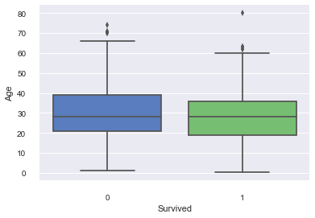

Titanic幸存预测¶
目录
1. 概述¶
Titanic幸存预测是Kaggle上的入门赛题。给定一些乘客的信息，及其最后是否幸存的label，作为训练样本,预测其他乘客是否幸存，是典型的二分类问题。
2. 数据分析¶
首先导入数据
In [2]:
import numpy as np
import pandas as pd
import warnings
import matplotlib
warnings.filterwarnings('ignore')
%matplotlib inline
import seaborn as sns
In [3]:
train = pd.read_csv('train.csv')
test = pd.read_csv('test.csv')
In [4]:
train.head()
Out[4]:
| PassengerId | Survived | Pclass | Name | Sex | Age | SibSp | Parch | Ticket | Fare | Cabin | Embarked | |
|---|---|---|---|---|---|---|---|---|---|---|---|---|
| 0 | 1 | 0 | 3 | Braund, Mr. Owen Harris | male | 22.0 | 1 | 0 | A/5 21171 | 7.2500 | NaN | S |
| 1 | 2 | 1 | 1 | Cumings, Mrs. John Bradley (Florence Briggs Th... | female | 38.0 | 1 | 0 | PC 17599 | 71.2833 | C85 | C |
| 2 | 3 | 1 | 3 | Heikkinen, Miss. Laina | female | 26.0 | 0 | 0 | STON/O2. 3101282 | 7.9250 | NaN | S |
| 3 | 4 | 1 | 1 | Futrelle, Mrs. Jacques Heath (Lily May Peel) | female | 35.0 | 1 | 0 | 113803 | 53.1000 | C123 | S |
| 4 | 5 | 0 | 3 | Allen, Mr. William Henry | male | 35.0 | 0 | 0 | 373450 | 8.0500 | NaN | S |
In [6]:
print(train.shape[0],test.shape[0])
891 418
Missing Data¶
年龄与舱位的数据缺失比较严重
In [46]:
total = train.isnull().sum().sort_values(ascending=False)
percent = (train.isnull().sum()/train.isnull().count()).sort_values(ascending=False)
Type = train.dtypes
pd.concat([total,percent,Type], axis=1, keys=['Total', 'Percent','Type'])
Out[46]:
| Total | Percent | Type | |
|---|---|---|---|
| Age | 177 | 0.198653 | float64 |
| Cabin | 687 | 0.771044 | object |
| Embarked | 2 | 0.002245 | object |
| Fare | 0 | 0.000000 | float64 |
| Name | 0 | 0.000000 | object |
| Parch | 0 | 0.000000 | int64 |
| PassengerId | 0 | 0.000000 | int64 |
| Pclass | 0 | 0.000000 | int64 |
| Sex | 0 | 0.000000 | object |
| SibSp | 0 | 0.000000 | int64 |
| Survived | 0 | 0.000000 | int64 |
| Ticket | 0 | 0.000000 | object |
In [7]:
train['Survived'].mean()
Out[7]:
0.3838383838383838
In [42]:
survived = train[['Pclass','Survived']].groupby(['Pclass']).mean()
count = train[['Pclass','Survived']].groupby(['Pclass']).count()
count.columns = ['count']
pd.concat([count,survived], axis=1)
Out[42]:
| count | Survived | |
|---|---|---|
| Pclass | ||
| 1 | 216 | 0.629630 |
| 2 | 184 | 0.472826 |
| 3 | 491 | 0.242363 |
- 3等座人数最多，1等2等差不多
- 等级越高，幸存率越高
In [43]:
survived = train[['Sex','Survived']].groupby(['Sex']).mean()
count = train[['Sex','Survived']].groupby(['Sex']).count()
count.columns = ['count']
pd.concat([count,survived], axis=1)
Out[43]:
| count | Survived | |
|---|---|---|
| Sex | ||
| female | 314 | 0.742038 |
| male | 577 | 0.188908 |
- 女性生存几率大大高于男性
In [44]:
survived = train[['Embarked','Survived']].groupby(['Embarked']).mean()
count = train[['Embarked','Survived']].groupby(['Embarked']).count()
count.columns = ['count']
pd.concat([count,survived], axis=1)
Out[44]:
| count | Survived | |
|---|---|---|
| Embarked | ||
| C | 168 | 0.553571 |
| Q | 77 | 0.389610 |
| S | 644 | 0.336957 |
- 登船口以S居多，C的幸存率较其他两个稍微高一点
In [63]:
import seaborn as sns
sns.set_style("darkgrid")
sns.boxplot(x="Survived", y="Age", data=train[['Age','Survived']], palette="muted")
sns.despine(offset=10, trim=True)

- 从年龄上看，并没有太大的差别